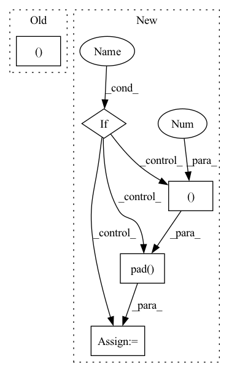

Pattern ID :1374
Before Change
raise RuntimeError("Unknown value for attention norm type")
context = torch.bmm(alignment.unsqueeze(1), inputs)
context = context.squeeze(1)
return context, alignment
class Postnet(nn.Module):
def __init__(self, mel_dim, num_convs=5):After Change
attention).sum(dim=1).unsqueeze(1)
else:
raise RuntimeError("Unknown value for attention norm type")
if self.forward_attn:
// forward attention
prev_alpha = F.pad( self.alpha[:, :-1].clone(), (1, 0, 0, 0 )) .to(inputs.device)
self.alpha = (((1-self.u) * self.alpha.clone().to(inputs.device) + self.u * prev_alpha) + 1e-7) * alignment
alpha_norm = self.alpha / self.alpha.sum(dim=1).unsqueeze(1)
// compute contextIn pattern: SUPERPATTERN
Frequency: 3
Non-data size: 5
Instances Fragment ID: 3970036
Project Name: coqui-ai/tts
Commit Name: 961af0f5cdefbb5f267671f6847cf05659962d6c
Time: 2019-04-05
Author: egolge@mozilla.com
File Name: layers/tacotron2.py
M Class Name: Attention
N Class Name: Attention
M Method Name: forward(6)
N Method Name: forward(6)
M Parent Class: nn.Module
N Parent Class: nn.Module
M File Name: layers/tacotron2.py
N File Name: layers/tacotron2.py
M Start Line: 173
M End Line: 175
N Start Line: 193
N End Line: 208
Before Change
if self.causal:
weight, bias = weight[:n, :n], bias[:n]
mask = torch.ones(weight.shape[:2], device = device).triu_(1).bool()
weight = weight.masked_fill(mask[..., None ], 0.)
gate = F.conv1d(gate, weight, bias)
After Change
weight, bias = self.weight, self.bias
if self.use_circulant_matrix:
dim_seq = weight.shape[-1]
weight = F.pad( weight, (0 , dim_seq ), value = 0)
weight = repeat(weight, "... n -> ... (r n)", r = dim_seq)
weight = weight[:-dim_seq].reshape(dim_seq, 2 * dim_seq - 1)
weight = weight[:, (dim_seq - 1):]
Fragment ID: 3970012
Project Name: lucidrains/g-mlp-pytorch
Commit Name: 9b986391ce83028dbf30dcb5f64c8e3cdf5efd6f
Time: 2021-08-13
Author: lucidrains@gmail.com
File Name: g_mlp_pytorch/g_mlp_pytorch.py
M Class Name: SpatialGatingUnit
N Class Name: SpatialGatingUnit
M Method Name: forward(3)
N Method Name: forward(3)
M Parent Class: nn.Module
N Parent Class: nn.Module
M File Name: g_mlp_pytorch/g_mlp_pytorch.py
N File Name: g_mlp_pytorch/g_mlp_pytorch.py
M Start Line: 91
M End Line: 99
N Start Line: 101
N End Line: 118
Before Change
x: B, H*W, C
H, W = self.input_resolution
B, L, C = x.shape
assert L == H * W, "input feature has wrong size"
assert H % 2 == 0 and W % 2 == 0, f"x size ({H}*{W}) are not even."After Change
x = x.view(B, H, W, C)
// padding
pad_input = (H % 2 == 1) or (W % 2 == 1)
if pad_input:
x = F.pad( x, (0, 0, 0, W % 2, 0, H % 2 ))
x0 = x[:, 0::2, 0::2, :] // B H/2 W/2 C
x1 = x[:, 1::2, 0::2, :] // B H/2 W/2 C
x2 = x[:, 0::2, 1::2, :] // B H/2 W/2 C Fragment ID: 3970037
Project Name: plemeri/inspyrenet
Commit Name: 12b05eaf235665fc6d1f89a9055b84d7cdfec923
Time: 2021-10-14
Author: taehoon1018@postech.ac.kr
File Name: lib/backbones/SwinTransformer.py
M Class Name: PatchMerging
N Class Name: PatchMerging
M Method Name: forward(4)
N Method Name: forward(2)
M Parent Class: nn.Module
N Parent Class: nn.Module
M File Name: lib/backbones/SwinTransformer.py
N File Name: lib/backbones/SwinTransformer.py
M Start Line: 310
M End Line: 313
N Start Line: 266
N End Line: 283